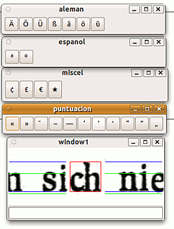

ocre
Dieser Artikel wurde für die folgenden Ubuntu-Versionen getestet:
Ubuntu 16.04 Xenial Xerus
Ubuntu 14.04 Trusty Tahr
Zum Verständnis dieses Artikels sind folgende Seiten hilfreich:
ocre  ist eine Kommandozeilenwerkzeug zur Texterkennung. Es wird von Luis José Cearra Zabala unter GPL-Lizenz entwickelt. ocre verarbeitet pgm/pbm-Daten (in Graustufen), Ausgabe erfolgt in unicode oder ISO 8859. Das Programm ist quasi ein "Forschungsprojekt", das seit 2000/01 stetig weiterentwickelt wird.
ist eine Kommandozeilenwerkzeug zur Texterkennung. Es wird von Luis José Cearra Zabala unter GPL-Lizenz entwickelt. ocre verarbeitet pgm/pbm-Daten (in Graustufen), Ausgabe erfolgt in unicode oder ISO 8859. Das Programm ist quasi ein "Forschungsprojekt", das seit 2000/01 stetig weiterentwickelt wird.
Installation¶
Benötigt werden die Pakete
libaspell15
libaspell-dev (zum Kompilieren nötig)
libatk1.0-0
libc6
libcairo2
libglib2.0-0
libgtk2.0-0
libpango1.0-0
gnuplot
 mit apturl
mit apturl
Paketliste zum Kopieren:
sudo apt-get install libaspell15 libaspell-dev libatk1.0-0 libc6 libcairo2 libglib2.0-0 libgtk2.0-0 libpango1.0-0 gnuplot
sudo aptitude install libaspell15 libaspell-dev libatk1.0-0 libc6 libcairo2 libglib2.0-0 libgtk2.0-0 libpango1.0-0 gnuplot
Das Programm selbst ist bisher nicht in den Paketquellen enthalten; allerdings existieren Debian-Pakete  , die auch unter Ubuntu laufen, benötigt werden ocre-decs*.deb, sowie ocre*.deb, die in dieser Reihenfolge installiert werden müssen[2] - diese Pakete sind allerdings für 32-Bit-Systeme vorgesehen!
, die auch unter Ubuntu laufen, benötigt werden ocre-decs*.deb, sowie ocre*.deb, die in dieser Reihenfolge installiert werden müssen[2] - diese Pakete sind allerdings für 32-Bit-Systeme vorgesehen!
Hinweis!
Fremdpakete können das System gefährden.
Für 64-Bit-Systeme kann das Programm im Quellcode bezogen werden. Benötigt werden die Archive ocre-decsWood-0.0xx.tgz und ocre_v0_0xx.tgz. Diese werden heruntergeladen, entpackt[3] und kompiliert[4]. Dazu zunächst die ocre_v0_0xx.tgz entpacken, und dann das ocre-descWood-0.0xx.tgz in den entstandenen Ordner /ocre-0.0xx entpacken. In das Verzeichnis ocre wechseln, dort die Datei instala ausführbar machen [4] und mit Rootrechten aufrufen.
Dann dort mit
make depend make ocre
das Programm kompilieren, und dann installieren.
 Außerdem kommt zur Ergänzung nicht erkannter Wörter Aspell zum Einsatz, dafür müssen das Paket
aspell
mit apturl
Paketliste zum Kopieren:
sudo apt-get install aspell
sudo aptitude install aspell
sowie die gewünschten Sprachpakete installiert[1] werden.
Funktionsweise¶
Ähnlich wie Ocrad erkennt ocre die einzelnen Zeichen über eine Differenzierung nach festgelegten Kriterien eines "Decision Wood" , nach denen die verschiedenen Eigenschaften sukzessive eingeteilt werden. Zunächst werden die Zeilen, dann die Zeichen differenziert, diese verglichen, oder, wenn zunächst unbekannt, ausgemessen, in der Datenbank danach geforscht und wenn nötig in einem Dialog-Fenster vom Benutzer abgefragt. ocre kann dabei Texte (und die entsprechenden Zeichensätze) für Englisch, Französisch, Deutsch, Polnisch, Portugiesisch, Russisch, und Spanisch sowie Katalanisch erkennen. ocre kann keine Spalten erkennen!
Bedienung¶
Die allgemeine Syntax auf der Kommandozeile[5] lautet:
ocre [Option(en)] Datei.pgm/pbm [> Ausgabedatei.txt] ocre [Option(en)] Datei1.pgm Datei1.pgm Datei3.pgm ... [> Ausgabedatei.txt]
Es öffnet sich meist ein Fenster, in dem der nicht erkannte Buchstabe rot umrahmt dargestellt ist (theoretisch kann das auch unterbleiben, aber nur, wenn tatsächlich alle Zeichen zweifelsfrei erkannt werden). Die weiteren Fenster sind direkt übereinander liegend, so dass sie zunächst auseinander geschoben werden müssen, um auf sie zugreifen zu können. Mit einem  -Klick auf die gewünschte Zeichentaste wird das jeweilige Zeichen in das Eingabefeld unten in "window1" kopiert, mit einem
⏎ das Zeichen eingegeben. Leider erkennt ocre z.T. die i- und Umlaut-Punkte nicht als zum Buchstaben gehörig, sodass ggf. eine Eingabe für solche "Zeichenteile" abgefragt wird. Wenn dann nichts eingetragen wird, erscheint nachher im Text eine Platzhalter "_"; es scheint nicht möglich zu sein, dass falsch erkannte Teile gar nicht aufgenommen werden. Auch scheint die Abfrage unbekannter Zeichen nicht abgeschaltet werden zu können, sodass eine automatische Erkennung und Verwendung aus einem anderen Programm heraus kaum möglich ist.
-Klick auf die gewünschte Zeichentaste wird das jeweilige Zeichen in das Eingabefeld unten in "window1" kopiert, mit einem
⏎ das Zeichen eingegeben. Leider erkennt ocre z.T. die i- und Umlaut-Punkte nicht als zum Buchstaben gehörig, sodass ggf. eine Eingabe für solche "Zeichenteile" abgefragt wird. Wenn dann nichts eingetragen wird, erscheint nachher im Text eine Platzhalter "_"; es scheint nicht möglich zu sein, dass falsch erkannte Teile gar nicht aufgenommen werden. Auch scheint die Abfrage unbekannter Zeichen nicht abgeschaltet werden zu können, sodass eine automatische Erkennung und Verwendung aus einem anderen Programm heraus kaum möglich ist.
Ohne Angabe einer Ausgabedatei wird der erkannte Text direkt im Terminal ausgeben, >>Ausgabetext.txt hängt den Text an eine bestehende Datei Ausgabetext.txt an. Am Ende des Textes steht die Anzahl der Abfragen unbekannter Zeichen (z.B. preguntas: 45). Besonders gute Ergebnisse erzielt ocre mit Texten in Serifen-Schriften wie Times New Roman ohne Ligaturen; Probleme entstehen besonders bei "defekten" Zeichen, die oft in Einzelbestandteile zerlegt werden.
Optionen¶
| ocre-Optionen | |
| Option | Funktion |
-d [n] | Schreibt Debugging-Informationen nach stdout, n gib dabei das Level an |
-h | Hilfe; Ausgabe der möglichen Optionen (leider in Spanisch...) |
-l [Sprachkürzel] | Verwendete Sprache im Dokument. Ein kleines Fenster mit dem spezifischen Zeichen der jeweiligen Sprache wird geöffnet. Verwendet werden die standardisierten Kürzel für die Sprachen (eng, ger, rus, spa, cat, fre, pol, por); die Texte werden in den entsprechenden IS0-8859-Zeichensätzen ausgegeben. |
-p [n] | Unklar - bei Werten von 1 bis 4 wird ein Gnuplot-Fenster mit einem Diagramm geöffnet. Bei 5 sollen die erkannten einzeln Zeichen als pgm-Dateien im Verzeichnis ./arm1 abgelegt werden, was aber spätestens nach dem ersten Zeichen mit einer Fehlermeldung abbricht. |
-C [Zeichen] | Gibt eine vergrößerte Durchschnittsvariante des angegebenen Zeichens im ImageMagick-Viewer aus und speichert sie als pgm im Ausgangsverzeichnis. Allerdings friert das Programm danach ein. |
-D | Verwendet aspell zur Ergänzung unvollständig erkannter Wörter; dadurch müssen bei eindeutiger Erweiterungsmöglichkeit weniger "unerkannte" Zeichen ergänzt werden. |
-u | Unicode für die Ausgabe verwenden |
Die Optionen werden vom Entwickler als "flüchtig" ("ephemeral") beschrieben; sie sind z.T. nur als temporäre Zwischenstadien anzusehen, die auch kaum dokumentiert sind. (-p[1|2|3|4] liefert z.B. interessante Grafiken in Gnuplot; deren Bedeutung ist allerdings nicht erläutert).

- Erstellt mit Inyoka
-
 2004 – 2017 ubuntuusers.de • Einige Rechte vorbehalten
2004 – 2017 ubuntuusers.de • Einige Rechte vorbehalten
Lizenz • Kontakt • Datenschutz • Impressum • Serverstatus -
Serverhousing gespendet von